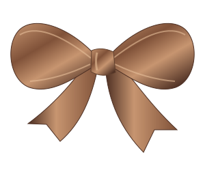
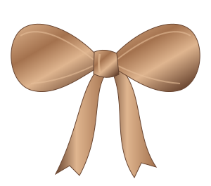

PERSONAL DETAILS / DIANA- Nama lengkap
- Diana Putri Fadilah
- Kelas
- X RPL 3
- Absen
- 3
- Sekolah
- SMK Krian 1 Sidoarjo
- Jurusan
- Rekayasa Perangkat Lunak
DIANA / PERSONAL DIGITAL STUDIO
Diana Putri Fadilah
Pelajar RPL yang sedang mengeksplorasi
pertemuan antara tampilan, logika, dan interaksi.

01 / THE PERSON BEHIND THE WORK
Aku Diana Putri Fadilah, siswi X RPL 3 di SMK Krian 1 Sidoarjo. Aku mempelajari pengembangan perangkat lunak, dari struktur halaman web hingga logika pemrograman.
Studio digital ini berisi identitasku, perjalanan sekolah, kemampuan, dan contoh proyek yang bisa kamu coba langsung.

PERSONAL DETAILS / DIANAEDUCATION / PERJALANAN BELAJAR
02 / TECHNICAL TOOLKIT
Bekal untuk menyusun tampilan dan membangun logika.
Persentase berdasarkan penilaian diri sesuai formulir.03 / INTERACTIVE LAB
Tiga demo baru, dibuat untuk studio ini.
Eksperimen kecil untuk memahami cara kerja kode.
Amati angka diurutkan dengan bubble sort. Jalankan animasi atau telusuri setiap perbandingan.
Jelajahi sandi Caesar: geser alfabet, sandikan pesan, lalu kembalikan ke teks semula.
Pilih dua tanggal dan hitung jaraknya dalam hari serta minggu, termasuk lintas tahun kabisat.
BEYOND THE EXPERIMENTS
Jelajahi ruang sertifikat dan pencapaian Diana.